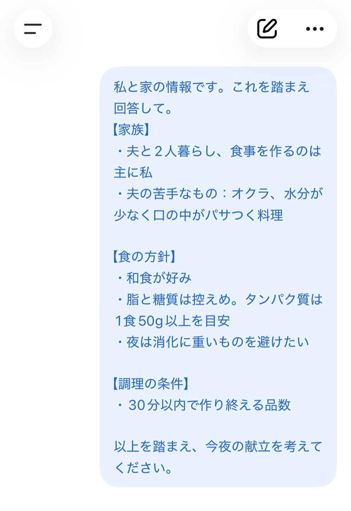
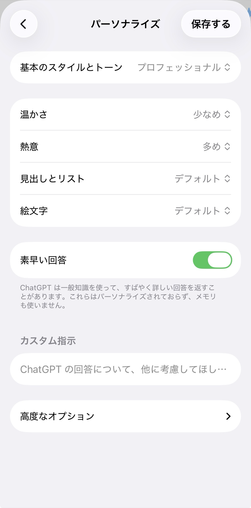
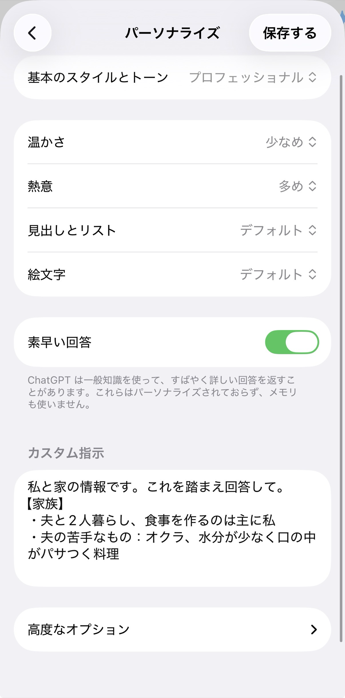
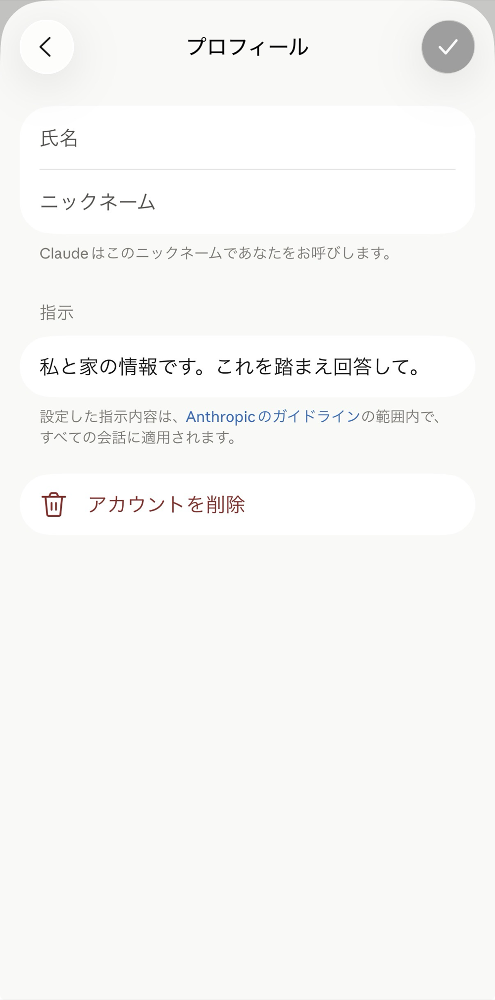
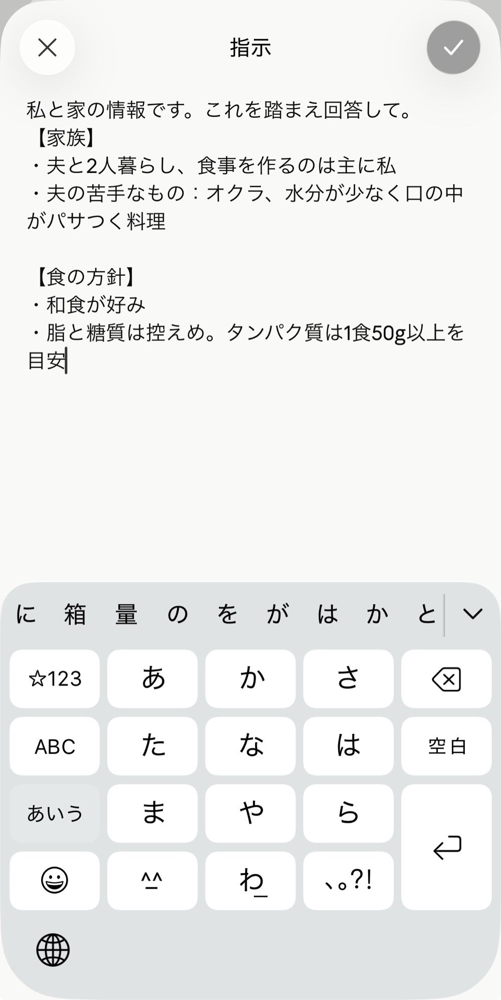
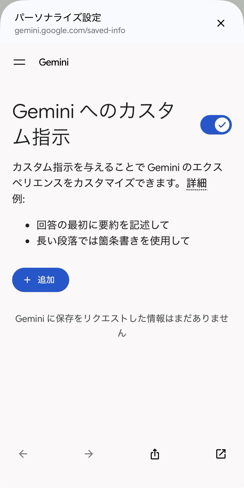
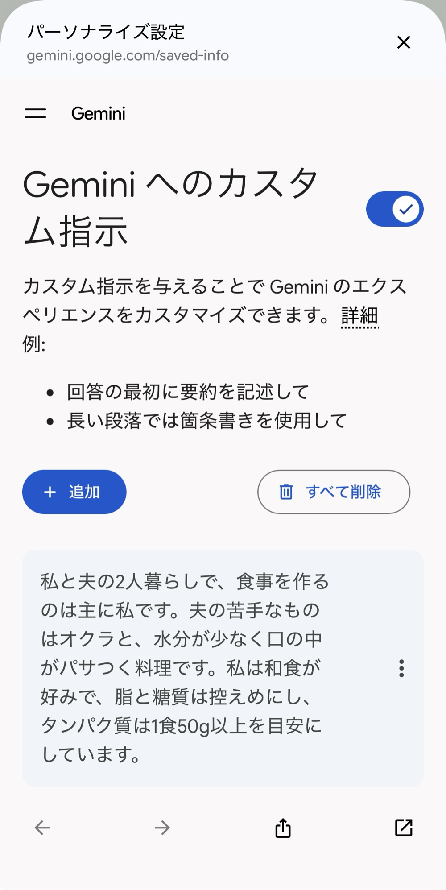

1今日の流れ
| 時間 | やること | この資料のどこを使うか |
|---|---|---|
| 14:00〜14:10（10分） | 答えを見比べる条件を伝えると何が変わるかを見ます | 2（まずは見るだけで大丈夫です） |
| 14:10〜14:30（20分） | 伝える情報を知る自分に合う答えをもらうために、何を伝えるとよいかを知ります | 3 |
| 14:30〜15:05（35分） | カルテを書く記入例を見ながら、自分と家の条件をメモに書きます | 4（記入例と空欄テンプレ） |
| 15:05〜15:15（10分） | 休憩する書き途中の方は、そのまま続けても大丈夫です | 4 |
| 15:15〜15:40（25分） | AIに相談する書いたメモをAIに貼って相談し、答えを確かめます | 5（質問文と聞き直しの例） |
| 15:40〜16:00（20分） | 保存する・質問するメモを設定に保存し、残りの時間で質問できます | 6・7 |
スマートフォンを基準に進めます。PCでも参加できますが、ボタンの位置や表示が異なる場合は講師が個別に案内します。
22つの答えを見比べる
ここは見ているだけで大丈夫です。
講師が同じ質問を2回投げます。1回目は何も渡さずに、2回目は家の情報を渡してから投げます。質問文は一字も変えません。変えたのは、先に渡した情報だけです。
質問に関係する条件を先に渡したことで、回答が変わりました。どの条件が反映されたかは、答えを見て確かめます。
部下に同じ依頼をするときも、前提を渡したかどうかで戻ってくるものが変わります。
3自分の条件を伝える考え方
自分に合う答えへ近づけるには、質問に関係する事情や、守ってほしい条件を選んで伝えます。そして、返ってきた答えにその条件が入っているかを確かめます。たくさん書く必要はありません。今回の質問に関係のないことや、今は変わっていることは外して大丈夫です。
| 14時の回今回 | 17時の回 | その先の回 | |
|---|---|---|---|
| カルテ | 1枚つくる | 用途ごとに分ける | 用途ごとに分けたまま使う |
| 渡し方 | 毎回貼る | 保存して使う | AIが必要な情報を探す |
| 手段 | コピーして貼る | 用途ごとの保存場所に入れる | AIが必要な情報を探せるようにする |
今回は14時の回です。カルテを1枚つくって、毎回貼って使えるところまで進みます。
新しく仕事を担当する人には、誰が何をしているか、何を守るか、いつもどう進めているかを先に伝えます。AIに渡すカルテも同じです。必要な事情を先にまとめると、自分に合う答えを考えてもらいやすくなります。
仕事を頼む相手に事情を伝えるのと同じことを、AIとの会話でも行います。
4メモに「暮らしのカルテ」を書く
まずメモアプリを開き、新しいメモを1つ作ってください。このページの空欄テンプレをコピーしたら、すぐにそのメモへ貼って、メモの中で書き始めます。ほかの文章をコピーしても、書きかけが消えません。
AIへ送る内容には、外に漏れると困る情報を書かないでください。実名・連絡先・未公開の契約や数字は取り除き、判断に迷う項目は書かずに進めます。この注意は、会話に送る内容にも、あとでプロフィールへ保存する内容にも当てはまります。
見出しは6つです。この6つで固定して書いてください。
記入例
私と家の情報です。これを踏まえて答えてください。
【家族】
- 夫婦2人暮らし。作るのは主に私
- 夫の苦手なもの: オクラ／水分が少なくパサつく料理（チヂミ・粉ふきいも・ゆで卵など）／そぼろ状の肉料理（ひき肉を使うこと自体は問題ない）
【食の方針】
- 和食が好み
- 夫が体重管理中のため、油と糖質は控えめに
- タンパク質はしっかり摂りたい。1食で合計50g以上が目安
- 塩分は控えめに。料理全体で食材総量の約1%が目安
- 夜は消化に重いものを避けたい
【調理の条件】
- 平日は30分以内で作り終えられる品数と内容にする
- 分量は再現できる形で書く。「塩少々」「ひとつまみ」のような曖昧な表現は使わない
- 料理ごとにカロリーとタンパク質量を添える
【調味料・食材】
- 昆布と鰹節の出汁を常備している
- 自家製の塩麹・醤油麹・ニンニク麹・生姜麹があり、塩や醤油の代わりに優先して使いたい
- 基本の調味料（味噌・醤油・みりん・酒・酢・ごま油・オリーブオイルなど）は一通りある
- 食材は最寄りのスーパーで買える一般的なものにする
【わたし（肌・体質）】
- インナードライ寄りのゆらぎやすい混合肌
- 季節の変わり目は特にゆらぎやすい
- 日によって、乾燥が強い日と、毛穴やテカリが気になる日がある
【手持ちのコスメ】
- 化粧水: 保湿系・鎮静系・バランス調整系の3タイプ
- 美容液: レチノール系（週2〜3回まで）／ナイアシンアミド系／ペプチド系／鎮静系／洗顔後に使う導入タイプ
- クリーム: 高保湿系・鎮静系・皮脂バランス調整系・目元用
- クレンジングと洗顔: オイル・ミルク・朝用の軽い洗顔
- 日焼け止め: 軽いタイプとトーンアップするタイプ空欄テンプレ
私と家の情報です。これを踏まえて答えてください。
【家族】
例: 何人暮らしか、作るのは誰か、苦手な食材や料理の形
【食の方針】
例: 好みのジャンル、体調や体重の都合、栄養や塩分の目安
【調理の条件】
例: 平日にかけられる時間、分量の書き方、添えてほしい情報
【調味料・食材】
例: 常備しているもの、優先して使いたいもの、買える範囲
【わたし（肌・体質）】
例: 肌タイプ、季節や日による変わり方、苦手な使用感
【手持ちのコスメ】
例: 化粧水・美容液・クリームなどを、種類と成分の系統で書き方のコツ
- 答えが変わる情報を書いてください。書いても答えが変わらないことは省いて大丈夫です
- 好みより先に、守ってほしい条件を書いてください。「〜が好き」だけでなく「〜は使えない」と書くと、答えに反映されやすくなります
- 1つの条件を1行で書いてください。あとから見直したり、書き換えたりしやすくなります
住所・病名のような、外に漏れると困る情報は書かないでください。
会社概要や事業状況を定型文にしておくと、次の依頼でも再利用しやすくなります。
5AIに相談して、答えを確かめる
貼り方
書いたカルテを会話の冒頭に貼って、1行あけて「これを踏まえて」と書き、そのあとに質問を続けてください。

質問文
献立で試すとき。
これを踏まえて、今夜の献立を考えてください。コスメで試すとき。同じカルテのまま、質問だけ変えてください。
これを踏まえて、今日の肌は乾燥気味です。手持ちのもので今夜のスキンケアの順番を組んでください。同じ1枚を献立とスキンケアで試し、質問に関係する条件が反映されたかを比べます。
答えを確認する
答えが返ってきたら、次の2つを確認してください。
どちらかに印をつけられない場合は、下の聞き直し方から1つ選んで送り、直った答えでもう一度確認します。
答えが合わないときの聞き直し方
返ってきた答えが合わなくても、最初からやり直す必要はありません。下の一文から近いものを選び、そのまま送ってみてください。
| 聞き直し方 | そのまま打てる一文 | 仕事でいうと |
|---|---|---|
| 条件を足す | 今日は30分ではなく15分しか取れません。この条件で組み直してください。 | 抜けていた条件を1つ足して、もう一度お願いする |
| 別案を出させる | ほかに2案お願いします。それぞれ主菜を変えてください。 | 案を並べてから選ぶ |
| 理由を聞く | なぜこの組み合わせにしたのか、理由を1行ずつ添えてください。 | 提出物の判断根拠を確認する |
| 詳しさを変える | 分量と手順を、そのまま作れる細かさで書き直してください。 | 必要な詳しさを伝えて、書き直してもらう |
| 使わないものを伝える | それは今日は使いません。外して作り直してください。 | 使えない条件を伝えて再提出してもらう |
| 先に確認させる | 足りない情報があれば、答える前に質問してください。 | 着手前に不明点を出してもらう |
この聞き直し方は、仕事で相手に修正をお願いするときにも使えます。
6設定に保存して、次の会話でも使う
ここまでで、書いた条件が答えに反映されたかを確認しました。反映されなかった条件があれば、カルテを直してから設定へ進んでください。
プロフィール設定へ置くと、次の会話で同じカルテを貼り直さずに使えます。条件が反映されたかは、次の答えでも確認してください。
ChatGPT
開く経路: 画面下のアカウントアイコン → 設定 → パーソナライズ
入れる欄: 画面の下のほうにある「カスタム指示」の欄。入れたら右上の「保存する」を押します
入れる量: 全部が入りきらないことがあります。【家族】【食の方針】【調理の条件】を先に入れて、足りなければ【調味料・食材】から削ってください


Claude
開く経路: 画面左上のメニュー → 設定 → プロフィール
入れる欄: 「指示」の欄。入れたら右上のチェックを押します
入れる量: 全部が入りきらないことがあります。【家族】【食の方針】【調理の条件】を先に入れて、足りなければ【調味料・食材】から削ってください


Gemini
開く経路: 画面右上のアカウントアイコン → 設定 → パーソナライズ設定（ブラウザの画面が開きます）
入れる欄: 「Gemini へのカスタム指示」の「＋ 追加」を押して出てくる欄
入れる量: 全部が入りきらないことがあります。【家族】【食の方針】【調理の条件】を先に入れて、足りなければ【調味料・食材】から削ってください


画面の名前はアプリの更新で変わることがあります。見つからないときは声をかけてください。
次の3つを覚えておいてください。
- メモリは過去の会話から役立つ情報を引き継ぐ機能です。「覚えて」と伝えたり、記憶の確認・修正・削除・停止ができるサービスもあります。使える範囲や動きは、サービスと設定によって異なります
- 今日使うプロフィール設定は、普段の答え方や好みを通常の会話に共通で伝える機能です。プロジェクトやGemでは、別の指示が優先されたり、適用されなかったりする場合があります
- 住所・病名は入れないでください
最初に作ったメモを、カルテの元として残してください。プロフィール設定は、別のツールへ自動では引き継がれません。メモに1枚残しておけば、使うツールを変えたときも同じ内容を貼り直せます。
手元に置いた定型文は、使うツールが変わっても資産として残ります。
7今日から続けるために
続け方はこの3つです。
- 内容が変わったら、まず元のメモを直して、そのあと設定に貼り直してください
- 用途が増えたら、カルテに見出しを足してください
- 答えが合わなくなったら、必要な条件の不足、古くなった条件、質問に関係しない情報がないかを見直してください
用途が増えて貼るのが面倒になったら、その先の回があります。今日17時の回がそれです。
暮らしの身近な題材で、条件を渡し、答えを確かめる練習をしました。この進め方は、仕事の依頼にも使えます。